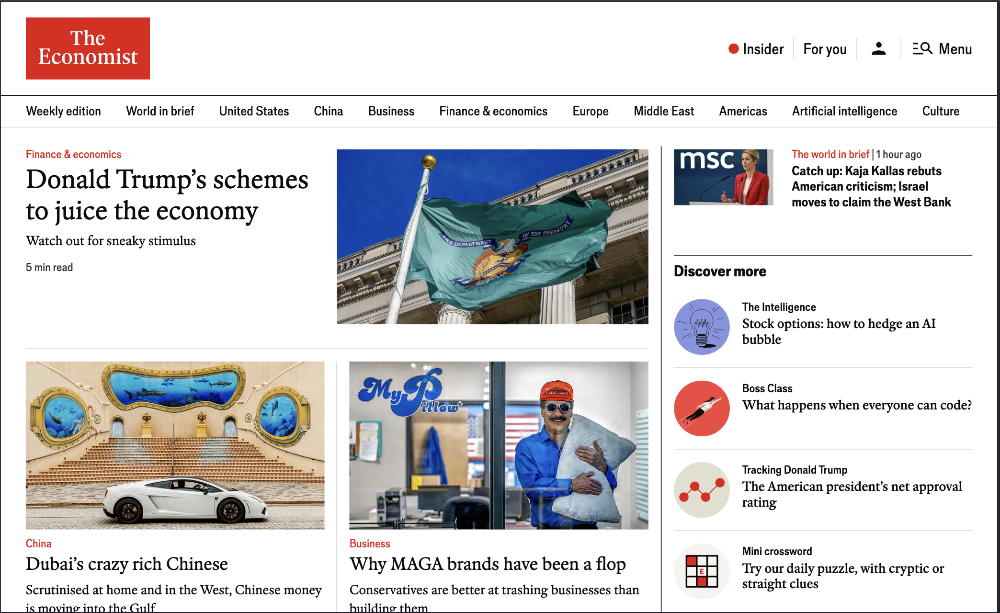

Homepage Evolution
The Economist
Owned the evolution of The Economist's homepage, delivering new components and variants for one of the publication's most visible and commercially critical surfaces.
Product Manager
I’m a Product Manager experienced in delivering thoughtful, reliable, and successful products for high-visibility and multi-national companies.

I solve complex problems, streamline workflows, and drive meaningful impact for technical platform and customer-facing products with a long-term strategic thinking approach.

At The Economist, my work centres on the systems publishing runs on. I shape content models, guide the move toward a more unified platform, and make practical architectural decisions so workflows become simpler, more reliable and easier to evolve without disrupting daily publishing.
At BBC Monitoring, I led the redesign of the subscriber portal and introduced a new CMS to replace fragmented tooling. The work focused on improving usability and discoverability while ensuring structured content behaved consistently across surfaces.

At the BBC, I worked on products used by millions worldwide, including World Service front pages, personalisation features and support for 2020 US election coverage. Delivering in these contexts required clear scope, careful coordination and a strong focus on reliability under pressure.

I trained in Computer Science at the University of Birmingham and began my career building production systems at Athium and Brainlabs, from football administration software used by professional clubs to internal tools integrating with major advertising platforms. That foundation still shapes how I work, helping me understand technical trade-offs and engage deeply with engineers.
The Economist
Owned the evolution of The Economist's homepage, delivering new components and variants for one of the publication's most visible and commercially critical surfaces.

The Economist
Led the migration of core publishing workflows into CUE and CPv2, modernising the platform that powers The Economist's global digital publishing.
The Economist
Delivered AI-generated audio for newly published articles, enabling near-immediate listening across the site and expanding reach to audio-first and younger audiences.

BBC
Helped deliver BBC News's 2020 US Election experience, including the homepage banner, election homepage and results pages, multilingual editorial controls, and data flows powering live results at global scale.
BBC
Contributed to the cross-platform recommendations engine used across iPlayer, Sounds, Sport and Video, improving content discovery for millions of users.
BBC
Integrated short-form video with the BBC recommendations engine and ran A/B tests to optimise placement and engagement.
The Economist
Built the infrastructure and homepage components enabling delivery of Insider, The Economist's premium subscriber content.
BBC Monitoring
Rebuilt article delivery and CMS workflows for a service used by governments and international institutions worldwide, enabling secure publishing from journalists working in sensitive regions and low-connectivity environments.

The Economist
Enabled podcast publishing and featuring directly from the CMS, giving editorial teams full control over placement, imagery and metadata while removing the need for code changes.
I focus on understanding the real problem before deciding what to build. Friction usually shows up in workflows, unclear ownership, or systems behaving in ways people don't expect.
I keep the longer-term direction in view, making deliberate trade-offs so short-term delivery reduces complexity rather than adding to it.
Understand the real problem
I start by understanding the real problem, not just the symptoms. By speaking directly with users and bringing colleagues into those conversations, I surface hidden friction in workflows and ensure we focus on pragmatic solutions that create real value.
At The Economist, this meant working closely with editorial teams to observe publishing workflows and uncover friction ahead of CMS migration planning.
Turn complexity into clarity
I translate complexity into clear outcomes so teams know exactly what they are building and why it matters. Engineers are never left in doubt about expectations, and stakeholders can see how the work connects to measurable impact.
During platform migration work, I converted competing stakeholder needs into clear delivery goals and success criteria that engineers could execute with confidence.
Create shared direction
I bring engineers, stakeholders, and partners together to build shared understanding and strong working relationships. Clear alignment builds trust, keeps initiatives value-driven, and creates momentum across teams.
Delivering changes to high-visibility publishing systems required aligning editorial leadership, engineers, and product stakeholders around shared priorities and trade-offs.
Deliver value pragmatically
I work closely with engineers to deliver incrementally, balancing new capabilities with the realities of supporting complex systems. This approach creates space for teams to ship meaningful improvements while maintaining reliability and technical health.
I supported delivery of features such as text-to-speech and enhanced podcast controls while ensuring stability for daily newsroom operations.
Reduce friction continuously
I treat delivery as the start of improvement, using feedback and operational insight to simplify workflows and remove friction. Attention to detail and a methodical approach help ensure each iteration makes the product easier to use and more effective.
Refining content tools based on newsroom feedback helped streamline editorial workflows and reduce manual work.
Use evidence to adapt
I use real usage, feedback, and team insight to guide what comes next. By sharing learnings and recognising team successes, I help build a culture that improves continuously and strengthens both the product and the people building it.
Post-launch reviews and usage insights informed future priorities and helped teams improve both the platform and the way we worked together.